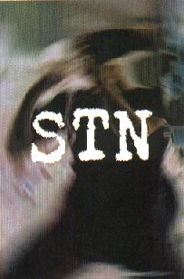

STN
- 6 músicas (13 min) -
|
|

|
| 1. fatos reais |
3:05 |
| 2. impunidade fardada |
2:02 |
| 3. falar por falar |
2:04 |
| 4. trabalho pra ninguém |
0:53 |
| 5. auto-destruição |
2:09 |
| 6. sexta-feira |
2:40 |
|
características:
| qualidade de gravação |
adesivo |
letras das músicas |
|
boa
|
não
|
sim
|
| cidade : |
curitiba - PR - Brasil |
| 1º ensaio : |
nov97 |
| gravação : |
dez98 |
| cantam em : |
português |
| influências : |
downset, biohazard, rage against the machine, deftones |
|
| integrantes: |
baixo |
- |
alexandre paulino |
| |
batera |
- |
wilson |
| |
guitarra |
- |
rodrigo brum |
| |
vocal |
- |
alexandre brum |
|
comentários:
"
antiga banda STRICKNOSE, que abreviou para STN, e que faz um som
pesadão (vide influênncias), com ritmos quebrados e vocal berrado,
bem potente. felizmente as letras são em português, e de protesto.
no geral, o som é de qualidade e as músicas são bem trabalhadas, é
uma demo indispensável aos amantes do estilo.
"